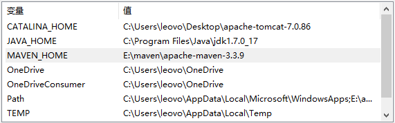
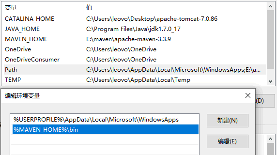
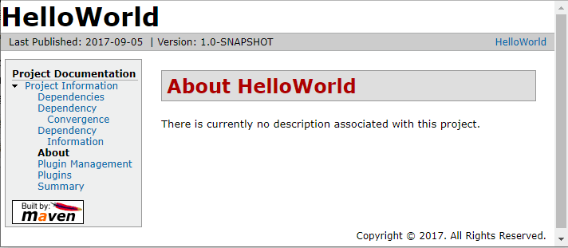
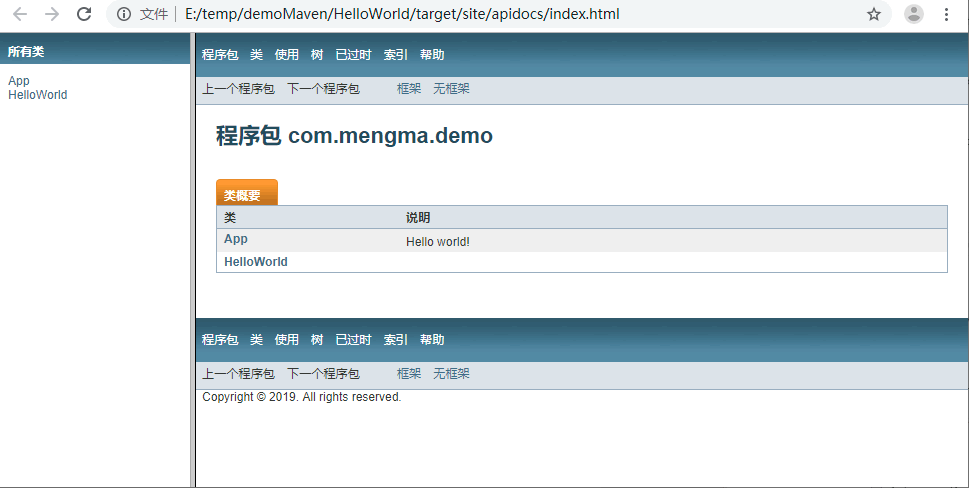

Java工具
Table of Contents
1 Maven
Maven 的作用如下：
- Maven 统一集中管理好所有的依赖包，不需要程序员再去寻找。
- 对应第三方组件用到的共同 jar，Maven 自动解决重复和冲突问题。
- Maven 作为一个开放的架构，提供了公共接口，方便同第三方插件集成。程序员可以将自 己需要的插件，动态地集成到 Maven，从而扩展新的管理功能。
- Maven 可以统一每个项目的构建过程，实现不同项目的兼容性管理。
1.1 Maven 的目录结构和内容
- bin 该目录包含了 mvn 运行的脚本，这些脚本用来配置 Java 命令，准备好 classpath
和相关的 Java 系统属性，然后执行 Java 命令。 其中 mvn 是基于 UNIX 平台的
shell 脚本，mvn.bat 是基于 Windows 平台的 bat 脚本。在命令行输入任何一条 mvn
命令时，实际上就是在调用这些脚本。
该目录还包含了 mvnDebug 和 mvnDebug.bat 两个文件，同样，前者是 UNIX 平台 的 shell 脚本，后者是 Windows 平台的 bat 脚本。那么 mvn 和 mvnDebug 有什么区 别和关系呢？
打开文件我们就可以看到，两者基本是一样的，只是 mvnDebug 多了一条 MAVENDEBUGOPTS 配置，其作用就是在运行 Maven 时开启 debug，以便调试 Maven 本 身。
此外，该目录还包含 m2.conf 文件，这是 classworlds 的配置文件，后面会介绍 classworlds。 - boot 该目录只包含一个文件，以 maven 3.3.9 为例，该文件为 plexus-classworlds-2.5.2.jar。 plexus-classworlds 是一个类加载器框架，相对于 默认的 java 类加载器，它提供了更丰富的语法以方便配置，Maven 使用该框架加载自 己的类库。 更多关于 classworlds 的信息请参考 http://classworlds.codehaus.org/。 对于一般的 Maven 用户来说，不必关心该文件。
- conf 该目录包含了一个非常重要的文件 settings.xml。直接修改该文件，就能在机器 上全局地定制 Maven 的行为。 一般情况下，我们更偏向于复制该文件至 ～/.m2/ 目录 下（～表示用户目录) ，然后修改该文件，在用户范围定制 Maven 的行为。后面将会多 次提到 settings.xml，并逐步分析其中的各个元素。
- lib 该目录包含了所有 Maven 运行时需要的 Java 类库，Maven 本身是分模块开发的， 因此用户能看到诸如 maven-core-3.0.jar、maven-model-3.0.jar 之类的文件。 此外， 这里还包含一些 Maven 用到的第三方依赖，如 common-cli-1.2.jar、 commons-lang-2.6.jar 等。 对于 Maven 2 来说，该目录只包含一个如 maven-2.2.1-uber.jar 的文件，原本各为独立 JAR 文件的 Maven 模块和第三方类库都 被拆解后重新合并到了这个 JAR 文件中。可以说，lib 目录就是真正的 Maven。 关于 该文件，还有一点值得一提的是，用户可以在这个目录中找到 Maven 内置的超级 POM， 这一点教程后面会详细解释。
- LICENSE.txt 记录了 Maven 使用的软件许可证Apache License Version 2.0。
- NOTICE.txt 记录了 Maven 包含的第三方软件。
- README.txt 包含了 Maven 的简要介绍，包括安装需求及如何安装的简要指令等。
1.2 Maven环境配置
在系统环境变量中添加 MAVEN_HOME ,添加 Path %MAVEN_HOME%/bin 是作为 Maven
的 Path 添加的


1.3 Maven的项目目录架构
src\main\java，用来存放项目的 Java 源代码。src\main\resources，用来存放项目相关的资源文件（比如配置文件）。src\test\java，用来存放项目的测试 Java 源代码。src\test\resource，用来存放运行测试代码时所依赖的资源文件。
还有一个 pom.xml 文件，该文件配置 Maven 管理的所有内容。
1.4 Maven创建项目
- 命令。命令很简单，就是创建项目的命令 create。 人们把要调用哪个软件的 create 命令创建项目叫插件（plugin）。创建项目的插件叫 Archetype 插件 （archetype-plugin）。
- 信息。和项目相关的信息包括 groupId（组 Id）、artifactId（构件 Id）、 packageName（包名）、version（版本）。 其实 packageName 和 version 好理解。程 序员写的类，肯定要放在一个标准包下或标准包的子包下，packageName 指标准包； version 是当前代码的版本号。 这里的 groupId 和 artifactId 同部门名称和组名称 一样，用来唯一确定一个项目（软件、功能）。有些地方会把这两个描述的信息合起来 叫“坐标”。
mvn archetype:generate
mvn org.apache.maven.plugins:maven-archetype-plugin:2.2:creat -DgroupId＝com.mengma.demo -DartifactId＝HelloWorld -DpackageName＝com.mengma.demo
- org.apache.maven.plugins:maven-archetype-plugin:2.2，指使用 groupId 为 org.apache.maven.plugins,artifactId 为 maven-archetype-plugin，版本为 2.2 的 Archetype插件。
- -DgroupId＝cn.com.mvnbook.demo，指定要创建的工程的 groupId。
- -DartifactId＝MVNBookTP01，指定工程的 artifactId。
- -DpackageName＝cn.com.mvnbook.demo.tp01，指定工程代码的标准包。
mvn archetype:generate "-DgroupId=com.companyname.bank" \
"-DartifactId=consumerBanking" \
"-DarchetypeArtifactId=maven-archetype-quickstart" \
"-DinteractiveMode=false"
- -DgourpId: 组织名，公司网址的反写 + 项目名称
- -DartifactId: 项目名-模块名
- -DarchetypeArtifactId: 指定 ArchetypeId，maven-archetype-quickstart，创建一个简单的 Java 应用
- -DinteractiveMode: 是否使用交互模式
1.5 Maven骨架文件 pom
<project xmlns="http://maven.apache.org/POM/4.0.0"
xmlns:xsi="http://www.w3.org/2001/XMLSchema-instance"
xsi:schemaLocation="http://maven.apache.org/POM/4.0.0 http://maven.apache.org/xsd/maven-4.0.0.xsd">
<modelVersion>4.0.0</modelVersion>
<groupId>com.mengma.demo</groupId>
<artifactId>HelloWorld</artifactId>
<version>0.0.1-SNAPSHOT</version>
<packaging>jar</packaging>
<name>HelloWorld</name>
<url>http://maven.apache.org</url>
<properties>
<project.build.sourceEncoding>UTF-8</project.build.sourceEncoding>
</properties>
<dependencies>
<dependency>
<groupId>junit</groupId>
<artifactId>junit</artifactId>
<version>4.7</version>
<scope>test</scope>
</dependency>
</dependencies>
</project>
- 创建工程时指定的 groupId。
- 创建工程时指定的 artifactId。
- 当前工程的版本。
- 工程编译好后，打成 jar 包安装发布。
- 测试时需要依赖的 JUnit 的 groupId。
- 测试时需要依赖的 JUnit 的 artifactId。
- 测试时需要依赖的 JUnit 的版本。
- 指定测试依赖的作用范围是测试。
1.6 Maven命令
将目录切换到工程目录下（HelloWorld）。
- 输入“mvn clean”，按 Enter 键清空以前编译安装过的历史结果。
- 输入“mvn compile”，按 Enter 键编译源代码。
- 输入“mvn test”，按 Enter 键运行测试案例进行测试。
- 输入“mvn install”，按 Enter 键，将当前代码打成 jar 包，安装到 Maven 的本地管理 目录下，其他 Maven 工程只要指定坐标就可以使用。
1.6.1 生成站点
mvn site
执行完成后，查看一下工程目录下的 target 目录，里面自动添加了一个 site 目录，都是 站点信息页面。打开其中的 index.html，就可以看到如图所示类似的页面，里面描述的 就是项目相关的信息。

1.6.2 生成文档
mvn javadoc:javadoc
在工程中自动产生 target\site\apidocs 目录，里面就是当前工程中代码的 API Doc 文档。 打开 index.html，页面如图所示。

1.6.3 运行main函数
mvn compile
不需要传入参数：
mvn exec:java -Dexec.mainClass="com.vineetmanohar.module.Main"
需要传入参数：
mvn exec:java -Dexec.mainClass="com.vineetmanohar.module.Main" -Dexec.args="arg0 arg1 arg2"
指定运行时依赖：
mvn exec:java -Dexec.mainClass="com.vineetmanohar.module.Main" -Dexec.classpathScope=runtime
1.7 本地仓库
aven 在根据坐标查找依赖的构件时，先是在本地仓库中查找。默认情况下，不管是
Windows 操作系统还是 Linux 操作系统，每个用户在自己的用户目录下都有一个路径名为
.m2/repository/ 的目录，这个目录就是 Maven 的本地仓库目录。比如，笔者的用户名
是 Noble，计算机上的默认本地仓库的目录就是 C:\Users\Noble\.m2\repository\ 。
一般为了便于文件的管理，用户会希望自定义本地仓库的目录。可以编辑
~/.m2/settings.xml 文件，设置其中的 localRepository 元素的值，就可以改变 Maven
本地仓库的默认位置。例如：
<settings>
...
<localRepository>
C:/java/servers/apache-archiva-2.2.1/repositories/internal
</localRepository>
...
</settings>
这样，本地仓库的目录就是
C:/java/servers/apache-archiva-2.2.1/repositories/internal 了。
另外需要注意一下的是，默认情况下， ~/.m2/settings.xml 文件是不存在的，需要从
Maven 的安装目录中复制 ＄M2_HOME/conf/settings.xml 文件到 ~/.m2/ 目录下，再进
行编辑。
当然如果嫌麻烦的话，可以直接修改 ＄M2_HOME/conf/settings.xml 文件，效果也是一
样的。但是不建议修改，因为 Maven 目录下的 settings.xml 是全局的，也就是每个用户
都共享，而 ~/.m2/settings.xml 只是对当前用户起作用，修改后不会影响其他用户。
一个构件只有存在本地仓库后才能被 Maven 项目使用。将构件保存到本地仓库最常见的有 两种方式，一种是以依赖的形成，从远程仓库下载到本地仓库；另一种是将本地项目编译打 包后，安装到本地仓库。
1.8 Maven版本号
Maven 将版本号约定为四个部分，即主版本、次版本、增量版本和里程碑版本，按如下格式 共同形成一个版本号。
<主版本>.<次版本>.<增量版本>-<里程碑版本>
- 主版本：表示项目重大架构的变更。比如 Struts1 和 Struts2，它们的架构体系都不同； JUnit4 和 JUnit3，一个全面支持注解，另一个就不支持。
- 次版本：表示有较大的功能增加和变化，或者全面系统地修复漏洞。
- 增量版本：表示有重大漏洞的修复。
- 里程碑版本：表明 一个版本的里程碑（版本内部）。这样的版本同下一个正式版本相比， 相对来说不是很稳定， 有待更多的测试。
需要注意的是，不是每个版本号都必须由这四个部分组成，有些版本号就可以没有增量版本 和里程碑版本。
1.8.1 主干，分支，标签
- 主干：项目开发的主体，也是主线、关键历程。从这里可以获取项目的最新代码和绝大 部分的变更历史。
- 分支：从主线某个点分离出去的一段分支。在一个特别时间点的时候，既要保持项目的 总体（主线）进度，又要同步修改某些重要漏洞、或实现特殊功能、或实验性开发，就 可以创建一个分支独立进行。分支达到预期效果后，需要将分支里面的变更合并到主线 中去。
- 标签：用来标记分支和主干进展到某个状态的点，代表项目进展到某个阶段或某个相对 比较稳定的状态。实际项目中，这种状态往往就是版本发布的状态。